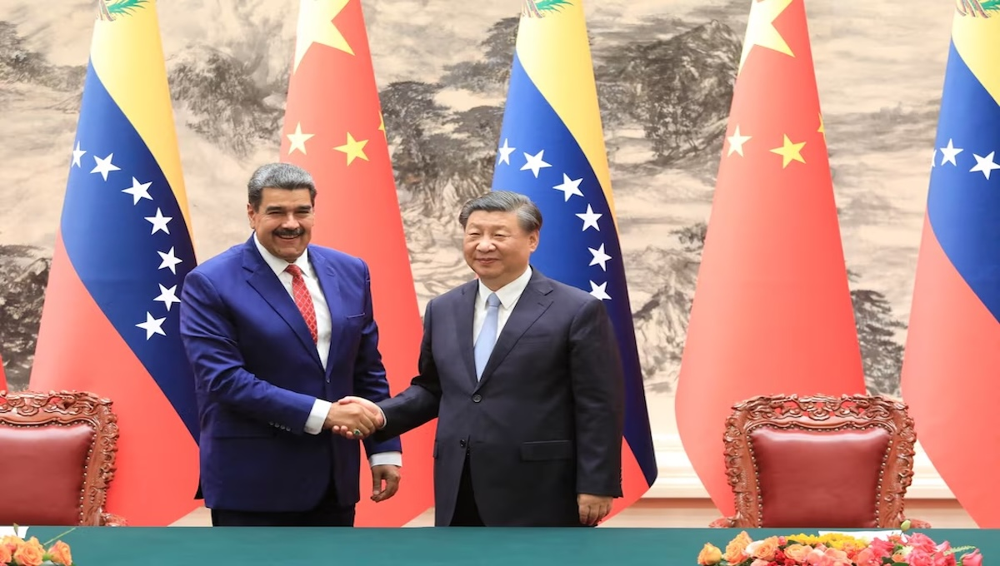

Why U.S. verse Venezuela Mirrors China verse Taiwan Relations
The political standoff between the United States and Venezuela may seem entirely different from the long-running tensions between China and Taiwan. One unfolds in the Western Hemisphere, the other in East Asia. One involves sanctions and economic pressure, the other military posturing and questions of sovereignty. Yet beneath the surface, both conflicts share strikingly similar dynamics rooted in power, legitimacy, and influence.
Competing Claims of Legitimacy
At the heart of both disputes lies a fundamental question: who holds legitimate authority?
In Venezuela, the United States and many of its allies have historically challenged the legitimacy of the Maduro government, recognizing opposition leadership and applying sanctions in an effort to force political change. Washington frames its position as a defense of democracy and human rights, while Caracas views U.S. involvement as foreign interference aimed at regime change.
Similarly, China considers Taiwan a breakaway province and rejects its claim to independent statehood. Taiwan, however, operates as a self-governing democracy with its own military, economy, and elected leadership. The United States does not formally recognize Taiwan as a sovereign nation, yet it actively supports Taipei through arms sales and diplomatic backing much as it supports opposition movements or alternative leadership in Venezuela.
In both cases, external powers challenge or reinforce legitimacy without directly governing, creating prolonged political stalemates.

Economic Pressure as a Strategic Weapon
Another major parallel is the use of economic leverage.
The United States has relied heavily on sanctions against Venezuela, targeting its oil sector, financial institutions, and political elites. These measures are designed to weaken the ruling government’s grip on power, but they also contribute to widespread economic hardship for ordinary citizens.
In the China Taiwan context, Beijing increasingly uses trade restrictions, tourism bans, and corporate pressure to influence Taiwanese politics and discourage international recognition. While the tools differ, the strategy is the same: apply economic pain to shape political outcomes without direct military confrontation.
Proxy Power and Regional Influence
Both conflicts also function as proxy struggles in larger geopolitical competitions.
Venezuela has become a focal point in the broader rivalry between the United States and countries like Russia and China, which provide economic and diplomatic support to Caracas. Control over Venezuela’s political future affects influence in Latin America, energy markets, and global alliances.
Taiwan plays a similar role in the strategic contest between the U.S. and China. Its geographic location, advanced semiconductor industry, and democratic system make it central to regional security and global supply chains. Any shift in Taiwan’s status would have consequences far beyond the island itself.

The Risk of Escalation Without Resolution
Perhaps the most concerning similarity is that neither conflict has a clear path to resolution. In Venezuela, years of sanctions, negotiations, and political pressure have failed to produce decisive change. In Taiwan, decades of strategic ambiguity have preserved peace, but rising nationalism and military activity increase the risk of miscalculation. Both situations exist in a fragile balance and short of full-scale war, yet far from stability
Different Regions, Same Power Politics While the historical, cultural, and political contexts differ, U.S. Venezuela relations and China Taiwan tensions follow the same underlying logic: great powers seeking to shape political outcomes in strategically important regions without triggering direct conflict. These disputes are less about ideology alone and more about influence, credibility, and control in an increasingly multipolar world. Understanding their similarities helps clarify a broader truth of modern geopolitics many of today’s “regional” conflicts are reflections of global power competition.
Analysis By The Societal News Team 16DEC2025